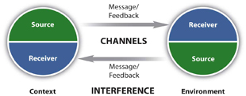
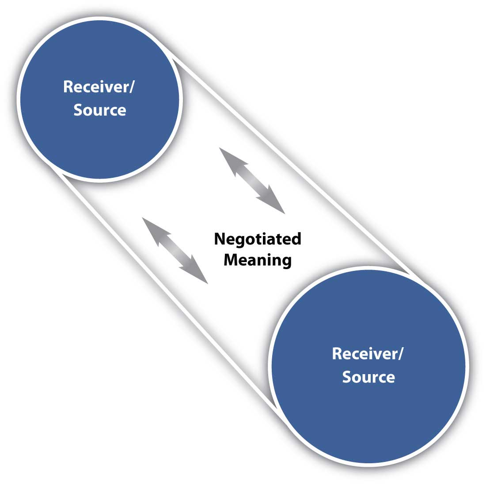

Communication leads to community, that is, to understanding, intimacy and mutual valuing.
Rollo May
I know that you believe that you understood what you think I said, but I am not sure you realize that what you heard is not what I meant.
Robert J. McCloskey, former State Department spokesman
Communication is an activity, skill, and art that incorporates lessons learned across a wide spectrum of human knowledge. Perhaps the most time-honored form of communication is storytelling. We’ve told each other stories for ages to help make sense of our world, anticipate the future, and certainly to entertain ourselves. The art of storytelling draws on your understanding of yourself, your message, and how you communicate it to an audience that is simultaneously communicating back to you. Your anticipation, reaction, and adaptation to the process will determine how successfully you are able to communicate. You were not born knowing how to write or even how to talk—but in the process of growing up, you have undoubtedly learned how to tell, and how not tell, a story out loud and in writing.
You didn’t learn to text in a day and didn’t learn all the codes—from LOL (laugh out loud) to BRB (be right back)—right away. In the same way, learning to communicate well requires you to read and study how others have expressed themselves, then adapt what you have learned to your present task—whether it is texting a brief message to a friend, presenting your qualifications in a job interview, or writing a business report. You come to this text with skills and an understanding that will provide a valuable foundation as we explore the communication process.
Effective communication takes preparation, practice, and persistence. There are many ways to learn communication skills; the school of experience, or “hard knocks,” is one of them. But in the business environment, a “knock” (or lesson learned) may come at the expense of your credibility through a blown presentation to a client. The classroom environment, with a compilation of information and resources such as a text, can offer you a trial run where you get to try out new ideas and skills before you have to use them to communicate effectively to make a sale or form a new partnership. Listening to yourself, or perhaps the comments of others, may help you reflect on new ways to present, or perceive, thoughts, ideas and concepts. The net result is your growth; ultimately your ability to communicate in business will improve, opening more doors than you might anticipate.
As you learn the material in this text, each part will contribute to the whole. The degree to which you attend to each part will ultimately help give you the skills, confidence, and preparation to use communication in furthering your career.
Communication is key to your success—in relationships, in the workplace, as a citizen of your country, and across your lifetime. Your ability to communicate comes from experience, and experience can be an effective teacher, but this text and the related business communication course will offer you a wealth of experiences gathered from professional speakers across their lifetimes. You can learn from the lessons they’ve learned and be a more effective communicator right out of the gate.
Business communication can be thought of as a problem solving activity in which individuals may address the following questions:
In this book, we will examine this problem solving process and help you learn to apply it in the kinds of situations you are likely to encounter over the course of your career.
We all share a fundamental drive to communicate. Communication can be defined as the process of understanding and sharing meaning.Pearson, J., & Nelson, P. (2000). An introduction to human communication: understanding and sharing (p. 6). Boston, MA: McGraw-Hill. You share meaning in what you say and how you say it, both in oral and written forms. If you could not communicate, what would life be like? A series of never-ending frustrations? Not being able to ask for what you need or even to understand the needs of others?
Being unable to communicate might even mean losing a part of yourself, for you communicate your self-conceptWhat we perceive ourselves to be.—your sense of self and awareness of who you are—in many ways. Do you like to write? Do you find it easy to make a phone call to a stranger or to speak to a room full of people? Perhaps someone told you that you don’t speak clearly or your grammar needs improvement. Does that make you more or less likely to want to communicate? For some, it may be a positive challenge, while for others it may be discouraging. But in all cases, your ability to communicate is central to your self-concept.
Take a look at your clothes. What are the brands you are wearing? What do you think they say about you? Do you feel that certain styles of shoes, jewelry, tattoos, music, or even automobiles express who you are? Part of your self-concept may be that you express yourself through texting, or through writing longer documents like essays and research papers, or through the way you speak.
On the other side of the coin, your communications skills help you to understand others—not just their words, but also their tone of voice, their nonverbal gestures, or the format of their written documents provide you with clues about who they are and what their values and priorities may be. Active listening and reading are also part of being a successful communicator.
When you were an infant, you learned to talk over a period of many months. When you got older, you didn’t learn to ride a bike, drive a car, or even text a message on your cell phone in one brief moment. You need to begin the process of improving your speaking and writing with the frame of mind that it will require effort, persistence, and self-correction.
You learn to speak in public by first having conversations, then by answering questions and expressing your opinions in class, and finally by preparing and delivering a “stand-up” speech. Similarly, you learn to write by first learning to read, then by writing and learning to think critically. Your speaking and writing are reflections of your thoughts, experience, and education. Part of that combination is your level of experience listening to other speakers, reading documents and styles of writing, and studying formats similar to what you aim to produce.
As you study business communication, you may receive suggestions for improvement and clarification from speakers and writers more experienced than yourself. Take their suggestions as challenges to improve; don’t give up when your first speech or first draft does not communicate the message you intend. Stick with it until you get it right. Your success in communicating is a skill that applies to almost every field of work, and it makes a difference in your relationships with others.
Remember, luck is simply a combination of preparation and timing. You want to be prepared to communicate well when given the opportunity. Each time you do a good job, your success will bring more success.
You want to make a good first impression on your friends and family, instructors, and employer. They all want you to convey a positive image, as it reflects on them. In your career, you will represent your business or company in spoken and written form. Your professionalism and attention to detail will reflect positively on you and set you up for success.
In both oral and written situations, you will benefit from having the ability to communicate clearly. These are skills you will use for the rest of your life. Positive improvements in these skills will have a positive impact on your relationships, your prospects for employment, and your ability to make a difference in the world.
Oral and written communication proficiencies are consistently ranked in the top ten desirable skills by employer surveys year after year. In fact, high-powered business executives sometimes hire consultants to coach them in sharpening their communication skills. According to the National Association of Colleges and Employers,National Association of Colleges and Employers. (2009). Frequently asked questions. Retrieved from http://www.naceweb.org/Press/Frequently_Asked_Questions.aspx?referal= the following are the top five personal qualities or skills potential employers seek:
Knowing this, you can see that one way for you to be successful and increase your promotion potential is to increase your abilities to speak and write effectively.
In September 2004, the National Commission on Writing for America’s Families, Schools, and Colleges published a study on 120 human resource directors titled Writing: A Ticket to Work…Or a Ticket Out, A Survey of Business Leaders.National Commission on Writing for America’s Families, Schools, and Colleges. (2004, September). Writing: A Ticket to Work…Or a Ticket Out, A Survey of Business Leaders. Retrieved from http://www.writingcommission.org/pr/writing_for_employ.html The study found that “writing is both a ‘marker’ of high-skill, high-wage, professional work and a ‘gatekeeper’ with clear equity implications,” said Bob Kerrey, president of New School University in New York and chair of the commission. “People unable to express themselves clearly in writing limit their opportunities for professional, salaried employment.”The College Board. (2004, September). Writing skills necessary for employment, says big business: Writing can be a ticket to professional jobs, says blue-ribbon group. Retrieved from http://www.writingcommission.org/pr/writing_for_employ.html
On the other end of the spectrum, it is estimated that over forty million Americans are illiterate, or unable to functionally read or write. If you are reading this book, you may not be part of an at-risk group in need of basic skill development, but you still may need additional training and practice as you raise your skill level.
An individual with excellent communication skills is an asset to every organization. No matter what career you plan to pursue, learning to express yourself professionally in speech and in writing will help you get there.
Communication forms a part of your self-concept, and it helps you understand yourself and others, solve problems and learn new things, and build your career.
Many theories have been proposed to describe, predict, and understand the behaviors and phenomena of which communication consists. When it comes to communicating in business, we are often less interested in theory than in making sure our communications generate the desired results. But in order to achieve results, it can be valuable to understand what communication is and how it works.
The root of the word “communication” in Latin is communicare, which means to share, or to make common.Weekley, E. (1967). An etymological dictionary of modern English (Vol. 1, p. 338). New York, NY: Dover Publications. CommunicationThe process of understanding and sharing meaning. is defined as the process of understanding and sharing meaning.Pearson, J., & Nelson, P. (2000). An introduction to human communication: Understanding and sharing (p. 6). Boston, MA: McGraw-Hill.
At the center of our study of communication is the relationship that involves interaction between participants. This definition serves us well with its emphasis on the process, which we’ll examine in depth across this text, of coming to understand and share another’s point of view effectively.
The first key word in this definition is processA dynamic activity that is hard to describe because it changes.. A process is a dynamic activity that is hard to describe because it changes.Pearson, J., & Nelson, P. (2000). An introduction to human communication: Understanding and sharing. Boston, MA: McGraw-Hill. Imagine you are alone in your kitchen thinking. Someone you know (say, your mother) enters the kitchen and you talk briefly. What has changed? Now, imagine that your mother is joined by someone else, someone you haven’t met before—and this stranger listens intently as you speak, almost as if you were giving a speech. What has changed? Your perspective might change, and you might watch your words more closely. The feedback or response from your mother and the stranger (who are, in essence, your audience) may cause you to reevaluate what you are saying. When we interact, all these factors—and many more—influence the process of communication.
The second key word is understandingTo perceive, to interpret, and to relate our perception and interpretation to what we already know.: “To understand is to perceive, to interpret, and to relate our perception and interpretation to what we already know.”McLean, S. (2003). The basics of speech communication. Boston, MA: Allyn & Bacon. If a friend tells you a story about falling off a bike, what image comes to mind? Now your friend points out the window and you see a motorcycle lying on the ground. Understanding the words and the concepts or objects they refer to is an important part of the communication process.
Next comes the word sharingDoing something together with one or more other people.. Sharing means doing something together with one or more people. You may share a joint activity, as when you share in compiling a report; or you may benefit jointly from a resource, as when you and several coworkers share a pizza. In communication, sharing occurs when you convey thoughts, feelings, ideas, or insights to others. You can also share with yourself (a process called intrapersonal communication) when you bring ideas to consciousness, ponder how you feel about something, or figure out the solution to a problem and have a classic “Aha!” moment when something becomes clear.
Finally, meaningWhat we share through communication. is what we share through communication. The word “bike” represents both a bicycle and a short name for a motorcycle. By looking at the context the word is used in and by asking questions, we can discover the shared meaning of the word and understand the message.
In order to better understand the communication process, we can break it down into a series of eight essential components:
Each of these eight components serves an integral function in the overall process. Let’s explore them one by one.
The sourcePerson who imagines, creates, and sends the message. imagines, creates, and sends the message. In a public speaking situation, the source is the person giving the speech. He or she conveys the message by sharing new information with the audience. The speaker also conveys a message through his or her tone of voice, body language, and choice of clothing. The speaker begins by first determining the message—what to say and how to say it. The second step involves encoding the message by choosing just the right order or the perfect words to convey the intended meaning. The third step is to present or send the information to the receiver or audience. Finally, by watching for the audience’s reaction, the source perceives how well they received the message and responds with clarification or supporting information.
“The messageThe stimulus or meaning produced by the source for the receiver or audience. is the stimulus or meaning produced by the source for the receiver or audience.”McLean, S. (2005). The basics of interpersonal communication (p. 10). Boston, MA: Allyn & Bacon. When you plan to give a speech or write a report, your message may seem to be only the words you choose that will convey your meaning. But that is just the beginning. The words are brought together with grammar and organization. You may choose to save your most important point for last. The message also consists of the way you say it—in a speech, with your tone of voice, your body language, and your appearance—and in a report, with your writing style, punctuation, and the headings and formatting you choose. In addition, part of the message may be the environment or context you present it in and the noise that might make your message hard to hear or see.
Imagine, for example, that you are addressing a large audience of sales reps and are aware there is a World Series game tonight. Your audience might have a hard time settling down, but you may choose to open with, “I understand there is an important game tonight.” In this way, by expressing verbally something that most people in your audience are aware of and interested in, you might grasp and focus their attention.
“The channelThe way in which a message or messages travel between source and receiver. is the way in which a message or messages travel between source and receiver.”McLean, S. (2005). The basics of interpersonal communication (p. 10). Boston, MA: Allyn & Bacon. For example, think of your television. How many channels do you have on your television? Each channel takes up some space, even in a digital world, in the cable or in the signal that brings the message of each channel to your home. Television combines an audio signal you hear with a visual signal you see. Together they convey the message to the receiver or audience. Turn off the volume on your television. Can you still understand what is happening? Many times you can, because the body language conveys part of the message of the show. Now turn up the volume but turn around so that you cannot see the television. You can still hear the dialogue and follow the story line.
Similarly, when you speak or write, you are using a channel to convey your message. Spoken channels include face-to-face conversations, speeches, telephone conversations and voice mail messages, radio, public address systems, and voice over Internet protocol (VoIP). Written channels include letters, memorandums, purchase orders, invoices, newspaper and magazine articles, blogs, e-mail, text messages, tweets, and so forth.
“The receiverReceives the message from the source, analyzing and interpreting the message in ways both intended and unintended by the source. receives the message from the source, analyzing and interpreting the message in ways both intended and unintended by the source.”McLean, S. (2005). The basics of interpersonal communication (p. 10). Boston, MA: Allyn & Bacon. To better understand this component, think of a receiver on a football team. The quarterback throws the football (message) to a receiver, who must see and interpret where to catch the ball. The quarterback may intend for the receiver to “catch” his message in one way, but the receiver may see things differently and miss the football (the intended meaning) altogether.
As a receiver you listen, see, touch, smell, and/or taste to receive a message. Your audience “sizes you up,” much as you might check them out long before you take the stage or open your mouth. The nonverbal responses of your listeners can serve as clues on how to adjust your opening. By imagining yourself in their place, you anticipate what you would look for if you were them. Just as a quarterback plans where the receiver will be in order to place the ball correctly, you too can recognize the interaction between source and receiver in a business communication context. All of this happens at the same time, illustrating why and how communication is always changing.
When you respond to the source, intentionally or unintentionally, you are giving feedback. FeedbackThe verbal and/or nonverbal response to a message. is composed of messages the receiver sends back to the source. Verbal or nonverbal, all these feedback signals allow the source to see how well, how accurately (or how poorly and inaccurately) the message was received. Feedback also provides an opportunity for the receiver or audience to ask for clarification, to agree or disagree, or to indicate that the source could make the message more interesting. As the amount of feedback increases, the accuracy of communication also increases.Leavitt, H., & Mueller, R. (1951). Some effects of feedback on communication. Human Relations, 4, 401–410.
For example, suppose you are a sales manager participating in a conference call with four sales reps. As the source, you want to tell the reps to take advantage of the fact that it is World Series season to close sales on baseball-related sports gear. You state your message, but you hear no replies from your listeners. You might assume that this means they understood and agreed with you, but later in the month you might be disappointed to find that very few sales were made. If you followed up your message with a request for feedback (“Does this make sense? Do any of you have any questions?”) you might have an opportunity to clarify your message, and to find out whether any of the sales reps believed your suggestion would not work with their customers.
“The environmentInvolves the physical and psychological aspects of the communication context. is the atmosphere, physical and psychological, where you send and receive messages.”McLean, S. (2005). The basics of interpersonal communication (p. 11). Boston, MA: Allyn & Bacon. The environment can include the tables, chairs, lighting, and sound equipment that are in the room. The room itself is an example of the environment. The environment can also include factors like formal dress, that may indicate whether a discussion is open and caring or more professional and formal. People may be more likely to have an intimate conversation when they are physically close to each other, and less likely when they can only see each other from across the room. In that case, they may text each other, itself an intimate form of communication. The choice to text is influenced by the environment. As a speaker, your environment will impact and play a role in your speech. It’s always a good idea to go check out where you’ll be speaking before the day of the actual presentation.
“The contextInvolves the setting, scene, and expectations of the individuals involved. of the communication interaction involves the setting, scene, and expectations of the individuals involved.”McLean, S. (2005). The basics of interpersonal communication (p.11). Boston, MA: Allyn & Bacon. A professional communication context may involve business suits (environmental cues) that directly or indirectly influence expectations of language and behavior among the participants.
A presentation or discussion does not take place as an isolated event. When you came to class, you came from somewhere. So did the person seated next to you, as did the instructor. The degree to which the environment is formal or informal depends on the contextual expectations for communication held by the participants. The person sitting next to you may be used to informal communication with instructors, but this particular instructor may be used to verbal and nonverbal displays of respect in the academic environment. You may be used to formal interactions with instructors as well, and find your classmate’s question of “Hey Teacher, do we have homework today?” as rude and inconsiderate when they see it as normal. The nonverbal response from the instructor will certainly give you a clue about how they perceive the interaction, both the word choices and how they were said.
Context is all about what people expect from each other, and we often create those expectations out of environmental cues. Traditional gatherings like weddings or quinceañeras are often formal events. There is a time for quiet social greetings, a time for silence as the bride walks down the aisle, or the father may have the first dance with his daughter as she is transformed from a girl to womanhood in the eyes of her community. In either celebration there may come a time for rambunctious celebration and dancing. You may be called upon to give a toast, and the wedding or quinceañera context will influence your presentation, timing, and effectiveness.
In a business meeting, who speaks first? That probably has some relation to the position and role each person has outside the meeting. Context plays a very important role in communication, particularly across cultures.
Interference, also called noise, can come from any source. “InterferenceAnything that blocks or changes the source’s intended meaning of the message. is anything that blocks or changes the source’s intended meaning of the message.”McLean, S. (2005). The basics of interpersonal communication (p. 11). Boston, MA: Allyn & Bacon. For example, if you drove a car to work or school, chances are you were surrounded by noise. Car horns, billboards, or perhaps the radio in your car interrupted your thoughts, or your conversation with a passenger.
Psychological noise is what happens when your thoughts occupy your attention while you are hearing, or reading, a message. Imagine that it is 4:45 p.m. and your boss, who is at a meeting in another city, e-mails you asking for last month’s sales figures, an analysis of current sales projections, and the sales figures from the same month for the past five years. You may open the e-mail, start to read, and think, “Great—no problem—I have those figures and that analysis right here in my computer.” You fire off a reply with last month’s sales figures and the current projections attached. Then, at five o’clock, you turn off your computer and go home. The next morning, your boss calls on the phone to tell you he was inconvenienced because you neglected to include the sales figures from the previous years. What was the problem? Interference: by thinking about how you wanted to respond to your boss’s message, you prevented yourself from reading attentively enough to understand the whole message.
Interference can come from other sources, too. Perhaps you are hungry, and your attention to your current situation interferes with your ability to listen. Maybe the office is hot and stuffy. If you were a member of an audience listening to an executive speech, how could this impact your ability to listen and participate?
Noise interferes with normal encoding and decoding of the message carried by the channel between source and receiver. Not all noise is bad, but noise interferes with the communication process. For example, your cell phone ringtone may be a welcome noise to you, but it may interrupt the communication process in class and bother your classmates.
Researchers have observed that when communication takes place, the source and the receiver may send messages at the same time, often overlapping. You, as the speaker, will often play both roles, as source and receiver. You’ll focus on the communication and the reception of your messages to the audience. The audience will respond in the form of feedback that will give you important clues. While there are many models of communication, here we will focus on two that offer perspectives and lessons for business communicators.
Rather than looking at the source sending a message and someone receiving it as two distinct acts, researchers often view communication as a transactionalModel of communication in which actions happen at the same time. process (Figure 1.3 "Transactional Model of Communication"), with actions often happening at the same time. The distinction between source and receiver is blurred in conversational turn-taking, for example, where both participants play both roles simultaneously.
Figure 1.3 Transactional Model of Communication
Researchers have also examined the idea that we all construct our own interpretations of the message. As the State Department quote at the beginning of this chapter indicates, what I said and what you heard may be different. In the constructivistModel of communication focusing on the negotiated meaning, or common ground, when trying to describe communication. model (Figure 1.4 "Constructivist Model of Communication"), we focus on the negotiated meaning, or common ground, when trying to describe communication.Pearce, W. B., & Cronen, V. (1980). Communication, action, and meaning: The creating of social realities. New York, NY: Praeger.,Cronen, V., & Pearce, W. B. (1982). The coordinated management of meaning: A theory of communication. In F. E. Dance (Ed.), Human communication theory (pp. 61–89). New York, NY: Harper & Row.
Imagine that you are visiting Atlanta, Georgia, and go to a restaurant for dinner. When asked if you want a “Coke,” you may reply, “sure.” The waiter may then ask you again, “what kind?” and you may reply, “Coke is fine.” The waiter then may ask a third time, “what kind of soft drink would you like?” The misunderstanding in this example is that in Atlanta, the home of the Coca-Cola Company, most soft drinks are generically referred to as “Coke.” When you order a soft drink, you need to specify what type, even if you wish to order a beverage that is not a cola or not even made by the Coca-Cola Company. To someone from other regions of the United States, the words “pop,” “soda pop,” or “soda” may be the familiar way to refer to a soft drink; not necessarily the brand “Coke.” In this example, both you and the waiter understand the word “Coke,” but you each understand it to mean something different. In order to communicate, you must each realize what the term means to the other person, and establish common ground, in order to fully understand the request and provide an answer.
Figure 1.4 Constructivist Model of Communication
Because we carry the multiple meanings of words, gestures, and ideas within us, we can use a dictionary to guide us, but we will still need to negotiate meaning.
The communication process involves understanding, sharing, and meaning, and it consists of eight essential elements: source, message, channel, receiver, feedback, environment, context, and interference. Among the models of communication are the transactional process, in which actions happen simultaneously, and the constructivist model, which focuses on shared meaning.
Now that we have examined the eight components of communication, let’s examine this in context. Is a quiet dinner conversation with someone you care about the same experience as a discussion in class or giving a speech? Is sending a text message to a friend the same experience as writing a professional project proposal or a purchase order? Each context has an influence on the communication process. Contexts can overlap, creating an even more dynamic process. You have been communicating in many of these contexts across your lifetime, and you’ll be able to apply what you’ve learned through experience in each context to business communication.
Have you ever listened to a speech or lecture and gotten caught up in your thoughts so that, while the speaker continued, you were no longer listening? During a phone conversation, have you ever been thinking about what you are going to say, or what question you might ask, instead of listening to the other person? Finally, have you ever told yourself how you did after you wrote a document or gave a presentation? As you “talk with yourself” you are engaged in intrapersonal communication.
Intrapersonal communicationCommunication with yourself. involves one person; it is often called “self-talk.”Wood, J. (1997). Communication in our lives (p. 22). Boston, MA: Wadsworth. Donna Vocate’sVocate, D. (Ed.). (1994). Intrapersonal communication: Different voices, different minds. Hillsdale, NJ: Lawrence Erlbaum. book on intrapersonal communication explains how, as we use language to reflect on our own experiences, we talk ourselves through situations. For example, the voice within you that tells you, “Keep on Going! I can DO IT!” when you are putting your all into completing a five-mile race; or that says, “This report I’ve written is pretty good.” Your intrapersonal communication can be positive or negative, and directly influences how you perceive and react to situations and communication with others.
What you perceive in communication with others is also influenced by your culture, native language, and your world view. As the German philosopher Jürgen Habermas said, “Every process of reaching understanding takes place against the background of a culturally ingrained preunderstanding.”Habermas, J. (1984). The theory of communicative action (Vol. 1, p. 100). Boston, MA: Beacon Press.
For example, you may have certain expectations of time and punctuality. You weren’t born with them, so where did you learn them? From those around you as you grew up. What was normal for them became normal for you, but not everyone’s idea of normal is the same.
When your supervisor invites you to a meeting and says it will start at 7 p.m., does that mean 7:00 sharp, 7-ish, or even 7:30? In the business context, when a meeting is supposed to start at 9 a.m., is it promptly a 9 a.m.? Variations in time expectations depend on regional and national culture as well as individual corporate cultures. In some companies, everyone may be expected to arrive ten to fifteen minutes before the announced start time to take their seats and be ready to commence business at 9:00 sharp. In other companies, “meeting and greeting” from about 9 to 9:05 or even 9:10 is the norm. When you are unfamiliar with the expectations for a business event, it is always wise to err on the side of being punctual, regardless of what your internal assumptions about time and punctuality may be.
The second major context within the field of communication is interpersonal communication. Interpersonal communicationCommunication between two people. normally involves two people, and can range from intimate and very personal to formal and impersonal. You may carry on a conversation with a loved one, sharing a serious concern. Later, at work, you may have a brief conversation about plans for the weekend with the security guard on your way home. What’s the difference? Both scenarios involve interpersonal communication, but are different in levels of intimacy. The first example implies a trusting relationship established over time between two caring individuals. The second example level implies some previous familiarity, and is really more about acknowledging each other than any actual exchange of information, much like saying hello or goodbye.
Have you ever noticed how a small group of people in class sit near each other? Perhaps they are members of the same sports program, or just friends, but no doubt they often engage in group communication.
“Group communicationThe exchange of information with those who are culturally, linguistically, and/or geographically alike. is a dynamic process where a small number of people engage in a conversation.”McLean, S. (2005). The basics of interpersonal communication (p. 14). Boston, MA: Allyn & Bacon. Group communication is generally defined as involving three to eight people. The larger the group, the more likely it is to break down into smaller groups.
To take a page from marketing, does your audience have segments or any points of convergence/divergence? We could consider factors like age, education, sex, and location to learn more about groups and their general preferences as well as dislikes. You may find several groups within the larger audience, such as specific areas of education, and use this knowledge to increase your effectiveness as a business communicator.
In public communicationCommunication in which one person speaks or writes a message to a group of people., one person speaks to a group of people; the same is true of public written communication, where one person writes a message to be read by a small or large group. The speaker or writer may ask questions, and engage the audience in a discussion (in writing, examples are an e-mail discussion or a point-counter-point series of letters to the editor), but the dynamics of the conversation are distinct from group communication, where different rules apply. In a public speaking situation, the group normally defers to the speaker. For example, the boss speaks to everyone, and the sales team quietly listens without interruption.
This generalization is changing as norms and expectations change, and many cultures have a tradition of “call outs” or interjections that are not to be interpreted as interruptions or competition for the floor, but instead as affirmations. The boss may say, as part of a charged-up motivational speech, “Do you hear me?” and the sales team is expected to call back “Yes Sir!” The boss, as a public speaker, recognizes that intrapersonal communication (thoughts of the individual members) or interpersonal communication (communication between team members) may interfere with this classic public speaking dynamic of all to one, or the audience devoting all its attention to the speaker, and incorporate attention getting and engagement strategies to keep the sales team focused on the message.
How do you tell everyone on campus where and when all the classes are held? Would a speech from the front steps work? Perhaps it might meet the need if your school is a very small one. A written schedule that lists all classes would be a better alternative. How do you let everyone know there is a sale on in your store, or that your new product will meet their needs, or that your position on a political issue is the same as your constituents? You send a message to as many people as you can through mass communication. Does everyone receive mass communication the same way the might receive a personal phone call? Not likely. Some people who receive mass mailings assume that they are “junk mail” (i.e., that they do not meet the recipients’ needs) and throw them away unopened. People may tune out a television advertisement with a click of the mute button, delete tweets or ignore friend requests on Facebook by the hundreds, or send all unsolicited e-mail straight to the spam folder unread.
Mass media is a powerful force in modern society and our daily lives, and is adapting rapidly to new technologies. Mass communicationInvolves sending a single message to a group. involves sending a single message to a group. It allows us to communicate our message to a large number of people, but we are limited in our ability to tailor our message to specific audiences, groups, or individuals. As a business communicator, you can use multimedia as a visual aid or reference common programs, films, or other images that your audience finds familiar yet engaging. You can tweet a picture that is worth far more than 140 characters, and you are just as likely to elicit a significant response. By choosing messages or references that many audience members will recognize or can identify with, you can develop common ground and increase the appeal of your message.
Communication contexts include intrapersonal, interpersonal, group, public, and mass communication. Each context has its advantages and disadvantages, and its appropriate and inappropriate uses.
Whenever you speak or write in a business environment, you have certain responsibilities to your audience, your employer, and your profession. Your audience comes to you with an inherent set of expectations that you will fulfill these responsibilities. The specific expectations may change given the context or environment, but two central ideas will remain: be prepared, and be ethical.
As the business communicator’s first responsibility, preparation includes several facets which we will examine: organization, clarity, and being concise and punctual.
Being prepared means that you have selected a topic appropriate to your audience, gathered enough information to cover the topic well, put your information into a logical sequence, and considered how best to present it. If your communication is a written one, you have written an outline and at least one rough draft, read it over to improve your writing and correct errors, and sought feedback where appropriate. If your communication is oral, you have practiced several times before your actual performance.
Part of being prepared is being organized. Aristotle called this logos, or logic, and it involves the steps or points that lead your communication to a conclusion. Once you’ve invested time in researching your topic, you will want to narrow your focus to a few key points and consider how you’ll present them. On any given topic there is a wealth of information; your job is to narrow that content down to a manageable level, serving the role of gatekeeper by selecting some information and “de-selecting,” or choosing to not include other points or ideas.
You also need to consider how to link your main points together for your audience. Use transitions to provide signposts or cues for your audience to follow along. “Now that we’ve examined X, let’s consider Y” is a transitional statement that provides a cue that you are moving from topic to topic. Your listeners or readers will appreciate your being well organized so that they can follow your message from point to point.
You have probably had the unhappy experience of reading or listening to a communication that was vague and wandering. Part of being prepared is being clear. If your message is unclear, the audience will lose interest and tune you out, bringing an end to effective communication.
Interestingly, clarity begins with intrapersonal communication: you need to have a clear idea in your mind of what you want to say before you can say it clearly to someone else. At the interpersonal level, clarity involves considering your audience, as you will want to choose words and phrases they understand and avoid jargon or slang that may be unfamiliar to them.
Clarity also involves presentation. A brilliant message scrawled in illegible handwriting, or in pale gray type on gray paper, will not be clear. When it comes to oral communication, if you mumble your words, speak too quickly or use a monotonous tone of voice, or stumble over certain words or phrases, the clarity of your presentation will suffer.
Technology also plays a part; if you are using a microphone or conducting a teleconference, clarity will depend on this equipment functioning properly—which brings us back to the importance of preparation. In this case, in addition to preparing your speech, you need to prepare by testing the equipment ahead of time.
Concise means brief and to the point. In most business communications you are expected to “get down to business” right away. Being prepared includes being able to state your points clearly and support them with clear evidence in a relatively straightforward, linear way.
It may be tempting to show how much you know by incorporating additional information into your document or speech, but in so doing you run the risk of boring, confusing, or overloading your audience. Talking in circles or indulging in tangents, where you get off topic or go too deep, can hinder an audience’s ability to grasp your message. Be to the point and concise in your choice of words, organization, and even visual aids.
Being concise also involves being sensitive to time constraints. How many times have you listened to a speaker say “in conclusion” only to continue speaking for what seems like forever? How many meetings and conference calls have you attended that got started late or ran beyond the planned ending time? The solution, of course, is to be prepared to be punctual. If you are asked to give a five-minute presentation at a meeting, your coworkers will not appreciate your taking fifteen minutes, any more than your supervisor would appreciate your submitting a fifteen-page report when you were asked to write five pages. For oral presentations, time yourself when you rehearse and make sure you can deliver your message within the allotted number of minutes.
There is one possible exception to this principle. Many non-Western cultures prefer a less direct approach, where business communication often begins with social or general comments that a U.S. audience might consider unnecessary. Some cultures also have a less strict interpretation of time schedules and punctuality. While it is important to recognize that different cultures have different expectations, the general rule holds true that good business communication does not waste words or time.
The business communicator’s second fundamental responsibility is to be ethical. EthicsRefers to a set of principles or rules for correct conduct. refers to a set of principles or rules for correct conduct. It echoes what Aristotle called ethos, the communicator’s good character and reputation for doing what is right. Communicating ethically involves being egalitarian, respectful, and trustworthy—overall, practicing the “golden rule” of treating your audience the way you would want to be treated.
Communication can move communities, influence cultures, and change history. It can motivate people to take stand, consider an argument, or purchase a product. The degree to which you consider both the common good and fundamental principles you hold to be true when crafting your message directly relates to how your message will affect others.
The word “egalitarian” comes from the root “equal.” To be egalitarianBelieving in basic equality. is to believe in basic equality: that all people should share equally in the benefits and burdens of a society. It means that everyone is entitled to the same respect, expectations, access to information, and rewards of participation in a group.
To communicate in an egalitarian manner, speak and write in a way that is comprehensible and relevant to all your listeners or readers, not just those who are “like you” in terms of age, gender, race or ethnicity, or other characteristics.
In business, you will often communicate to people with certain professional qualifications. For example, you may draft a memo addressed to all the nurses in a certain hospital, or give a speech to all the adjusters in a certain branch of an insurance company. Being egalitarian does not mean you have to avoid professional terminology that is understood by nurses or insurance adjusters. But it does mean that your hospital letter should be worded for all the hospital’s nurses—not just female nurses, not just nurses working directly with patients, not just nurses under age fifty-five. An egalitarian communicator seeks to unify the audience by using ideas and language that are appropriate for all the message’s readers or listeners.
People are influenced by emotions as well as logic. Aristotle named pathos, or passion, enthusiasm and energy, as the third of his three important parts of communicating after logos and ethos.
Most of us have probably seen an audience manipulated by a “cult of personality,” believing whatever the speaker said simply because of how dramatically he or she delivered a speech; by being manipulative, the speaker fails to respect the audience. We may have also seen people hurt by sarcasm, insults, and other disrespectful forms of communication.
This does not mean that passion and enthusiasm are out of place in business communication. Indeed, they are very important. You can hardly expect your audience to care about your message if you don’t show that you care about it yourself. If your topic is worth writing or speaking about, make an effort to show your audience why it is worthwhile by speaking enthusiastically or using a dynamic writing style. Doing so, in fact, shows respect for their time and their intelligence.
However, the ethical communicator will be passionate and enthusiastic without being disrespectful. Losing one’s temper and being abusive are generally regarded as showing a lack of professionalism (and could even involve legal consequences for you or your employer). When you disagree strongly with a coworker, feel deeply annoyed with a difficult customer, or find serious fault with a competitor’s product, it is important to express such sentiments respectfully. For example, instead of telling a customer, “I’ve had it with your complaints!” a respectful business communicator might say, “I’m having trouble seeing how I can fix this situation. Would you explain to me what you want to see happen?”
Trust is a key component in communication, and this is especially true in business. As a consumer, would you choose to buy merchandise from a company you did not trust? If you were an employer, would you hire someone you did not trust?
Your goal as a communicator is to build a healthy relationship with your audience, and to do that you must show them why they can trust you and why the information you are about to give them is believable. One way to do this is to begin your message by providing some information about your qualifications and background, your interest in the topic, or your reasons for communicating at this particular time.
Your audience will expect that what you say is the truth as you understand it. This means that you have not intentionally omitted, deleted, or taken information out of context simply to prove your points. They will listen to what you say and how you say it, but also to what you don’t say or do. You may consider more than one perspective on your topic, and then select the perspective you perceive to be correct, giving concrete reasons why you came to this conclusion. People in the audience may have considered or believe in some of the perspectives you consider, and your attention to them will indicate you have done your homework.
Being worthy of trust is something you earn with an audience. Many wise people have observed that trust is hard to build but easy to lose. A communicator may not know something and still be trustworthy, but it’s a violation of trust to pretend you know something when you don’t. Communicate what you know, and if you don’t know something, research it before you speak or write. If you are asked a question to which you don’t know the answer, say “I don’t know the answer but I will research it and get back to you” (and then make sure you follow through later). This will go over much better with the audience than trying to cover by stumbling through an answer or portraying yourself as knowledgeable on an issue that you are not.
When in doubt, remember the “golden rule,” which says to treat others the way you would like to be treated. In all its many forms, the golden rule incorporates human kindness, cooperation, and reciprocity across cultures, languages, backgrounds and interests. Regardless of where you travel, who you communicate with, or what your audience is like, remember how you would feel if you were on the receiving end of your communication, and act accordingly.
As a communicator, you are responsible for being prepared and being ethical. Being prepared includes being organized, clear, concise, and punctual. Being ethical includes being egalitarian, respectful, and trustworthy and overall, practicing the “golden rule.”
The International Association of Business Communicators (IABC) is a global network of communication professionals committed to improving organizational effectiveness through strategic communication. http://www.iabc.com
Explore the Web site of the National Communication Association, the largest U.S. organization dedicated to communication. http://www.natcom.org
Read The National Commission on Writing’s findings about the importance of communication skills in business. http://www.writingcommission.org/pr/writing_for_employ.html
The National Association of Colleges and Employers offers news about employment prospects for college graduates. http://www.naceweb.org
Dale Carnegie, author of the classic How to Win Friends and Influence People, may have been one of the greatest communicators of the twentieth-century business world. The Dale Carnegie Institute focuses on giving people in business the opportunity to sharpen their skills and improve their performance in order to build positive, steady, and profitable results. http://www.dalecarnegie.com
Purdue University’s Online Writing Lab (OWL) provides a wealth of resources for writing projects. http://owl.english.purdue.edu
To communicate ethically, check your facts. FactCheck is a nonpartisan project of the Annenberg Center for Public Policy at the University of Pennsylvania. http://www.factcheck.org
To communicate ethically, check your facts. PolitiFact is a nonpartisan project of the St. Petersburg Times; it won a Pulitzer Prize in 2009. http://www.politifact.com